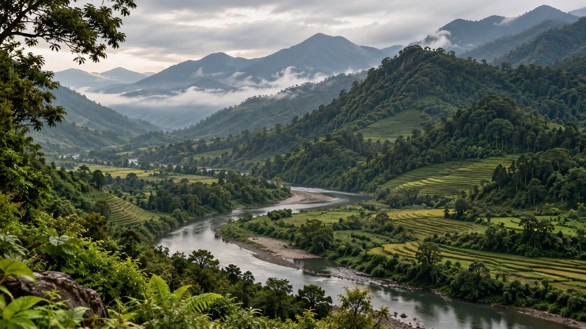

B.S. Botany
Studied the foundations of plant biology, physiology, ecosystem interaction, and applied scientific reasoning.
Background & direction
A Botany graduate building a foundation in plant stress physiology, molecular research, and evidence-based plant health science.
I completed my Bachelor of Science in Botany at the University of Swat, Pakistan, graduating with a CGPA of 4.0/4.0.
My academic interests center on the ways plants respond to stress, especially salinity, environmental variance, and the physiological processes that allow crops to survive and adapt.
Through undergraduate research, I developed a strong interest in connecting lab-based observations with broader agronomic questions. I enjoy thinking about how experimental evidence can help explain plant resilience and improve how we study plant health.
I am now aiming to strengthen my foundation in research communication, scientific writing, and evidence synthesis while continuing to explore plant biology more deeply.

Plant systems, resilience, and scientific curiosity.
Education
Studied the foundations of plant biology, physiology, ecosystem interaction, and applied scientific reasoning.
Explored seed priming, salinity stress responses, and physiological tolerance mechanisms in lentil.